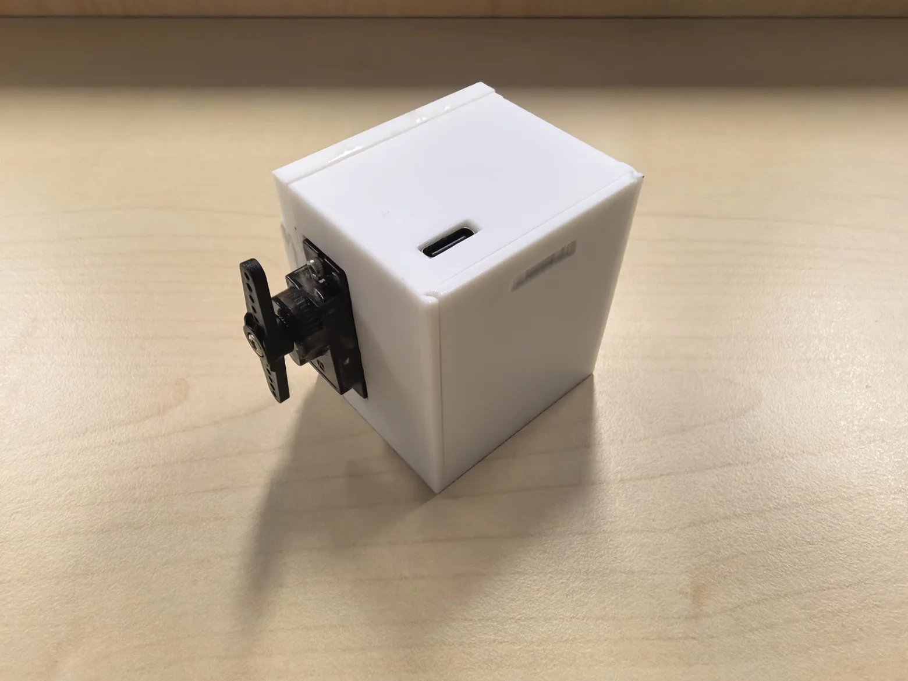
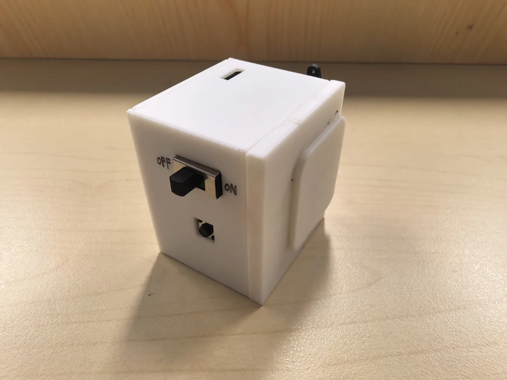
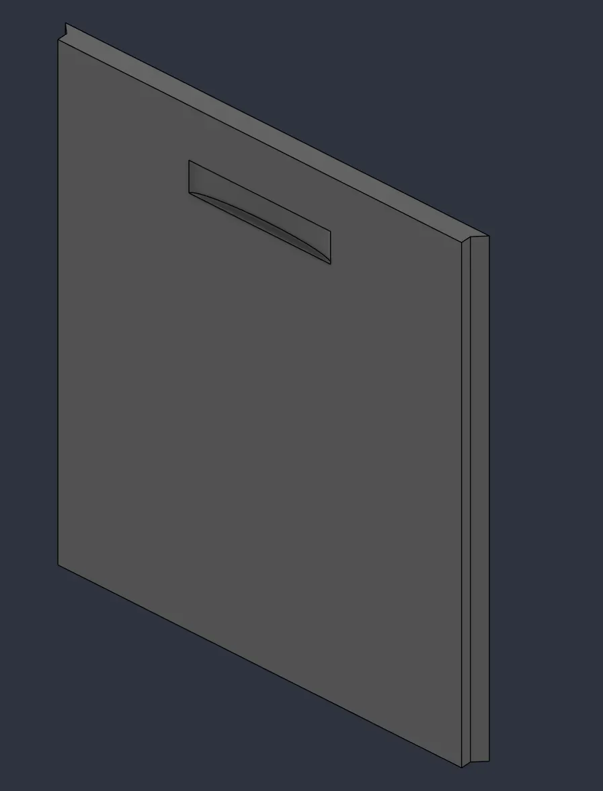
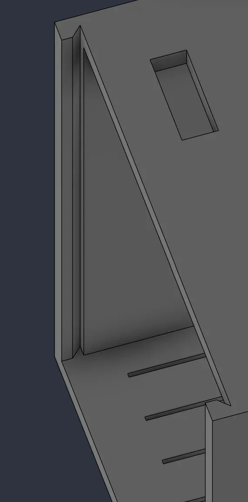
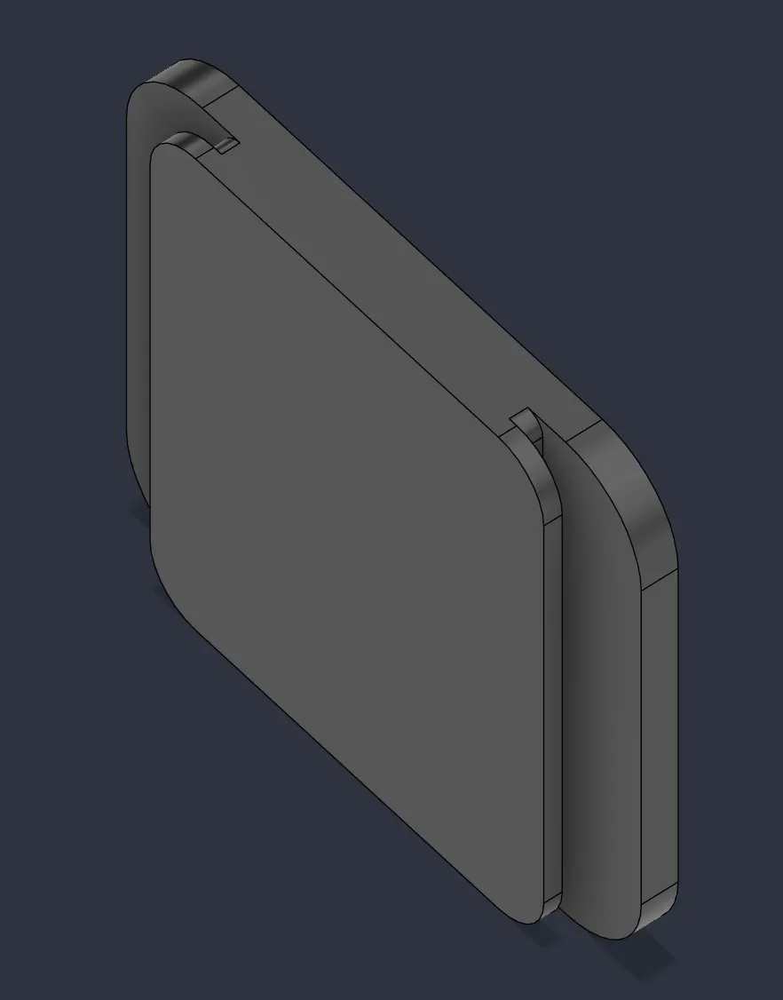
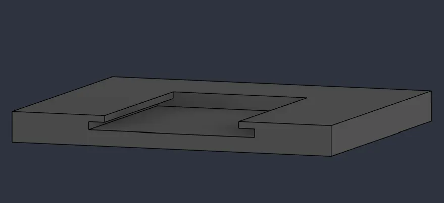
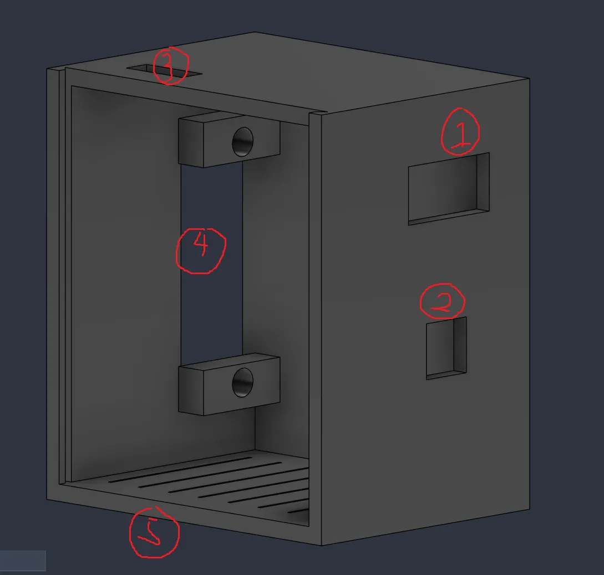
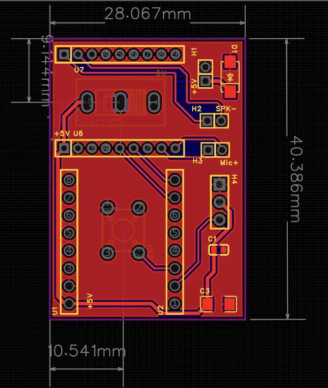
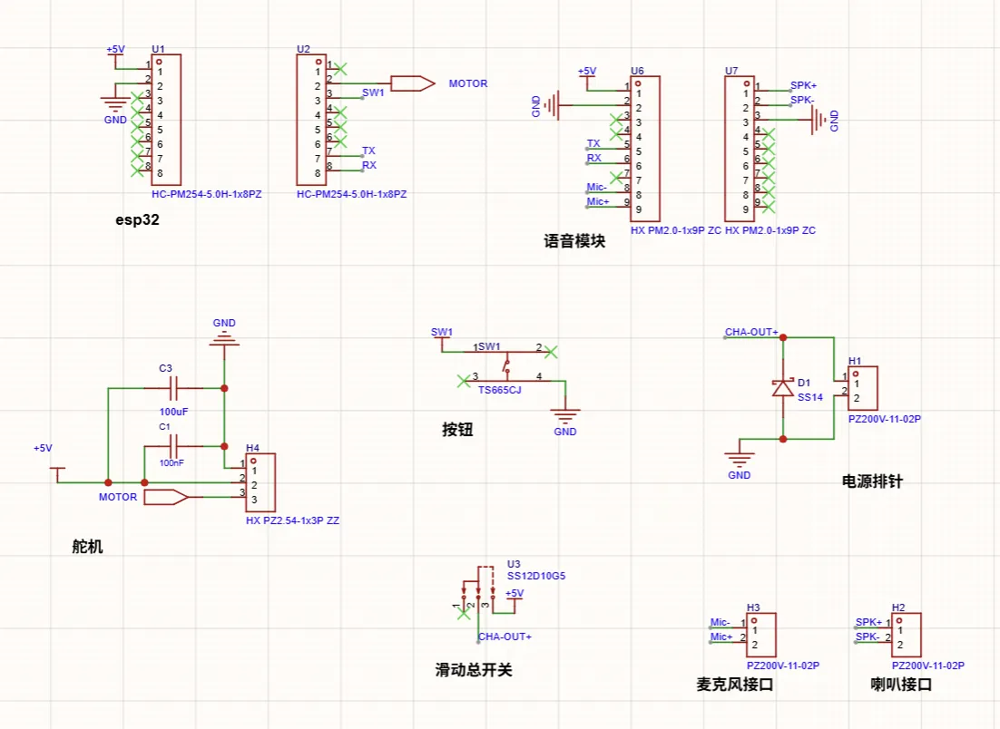

返回硬件项目索引
返回硬件项目索引说开就开
阅读项目文档 ↓本项目是一款支持语音、实体与手机远程控制的智能墙壁开关装置，通过舵机模拟人手拨动开关，无需改动原有开关电路，即可为传统开关增添智能控制功能，让日常开关灯更加便捷。
装置以 ESP32-C3 Mini 为核心，结合 SU-03T 离线语音识别模块，实现语音指令识别、WiFi 手机端控制及扬声器语音回复。系统采用可充电锂电池供电，配备充电保护与升压模块，并结合定制 PCB 和 3D 打印外壳完成集成。外壳采用滑轨安装思路，便于拆装与维护。
项目经历了需求分析、电路设计、结构建模、焊接装配及故障排查等过程，在反复测试中逐步优化供电与机械结构。制作过程中借助 AI 辅助方案设计与迭代，并通过实际应用验证可行性，探索以较低成本转化为日常生活可用实物。










项目文档
暑期项目介绍
暑期项目介绍
项目概况
项目名称：说开就开
mentor：巩子杰
项目简介
本项目是一款基于 ESP32-C3 和 su03T 的便捷墙壁开关控制器。系统通过 WiFi 手机端或离线语音模块或实体按钮接收控制指令，再由 ESP32-C3 控制 MG90 舵机通过拨杆模拟人手拨动墙壁开关，实现传统开关的远程控制与语音控制，从而满足了不需要改动原电路就能远程控制传统开关的需求。装置通过锂电池供电，也可以通过外接USB口充电。
---
项目成长
嵌入式代码
下面对关键功能部分代码进行说明
WiFi 热点创建
功能说明：ESP32 上电后自动创建 WiFi 热点，无需依赖路由器，手机连接后即可访问控制网页。针对 SuperMini 板载天线较弱的问题，将发射功率设为 8.5dBm，保证热点能被手机稳定搜索到。
主要代码：
C++
// 热点参数配置
const char* AP_SSID = "ESP32-Servo"; // 热点名称
define AP_TX_POWER WIFI_POWER_8_5dBm // 发射功率
// setup() 中执行：
WiFi.mode(WIFI_AP); // 切换到热点模式
if (!WiFi.softAP(AP_SSID, AP_PASSWORD)) { // 创建热点
Serial.println("AP create FAILED!");
}
WiFi.setTxPower(AP_TX_POWER); // 设置发射功率
舵机控制
功能说明：MG90 舵机由 PWM 信号驱动，角度范围 0°~180°。程序定义三个关键位置：中位、开灯位、反向位。执行开灯 / 关灯动作时，舵机先转到目标位置，停留 0.5 秒后自动回到中位。servoForward() 和 servoBackward() 封装了完整动作流程，供三种控制方式共用。
主要代码：
C++
// 引脚与角度定义
define SERVO_PIN 6 // 舵机 PWM 信号引脚
define ANGLE_CENTER 90 // 中位
define ANGLE_FORWARD 40 // 开灯位
define ANGLE_BACKWARD 140 // 反向位
define HOLD_MS 500 // 到位后停留时间（毫秒）
// 初始化：绑定引脚并回中位
myServo.attach(SERVO_PIN);
myServo.write(ANGLE_CENTER);
// 开灯动作：转到开灯位 → 停 0.5s → 回中位
void servoForward() {
myServo.write(ANGLE_FORWARD);
delay(HOLD_MS);
myServo.write(ANGLE_CENTER);
}
// 关灯动作同理：转到反向位 → 停 0.5s → 回中位
void servoBackward() {
myServo.write(ANGLE_BACKWARD);
delay(HOLD_MS);
myServo.write(ANGLE_CENTER);
}
ESP32 与语音模块的通信
功能说明：语音识别模块与 ESP32 通过 UART 通信（9600bps、8 数据位、无校验、1 停止位；RX=GPIO20、TX=GPIO21）。模块识别到口令后发送5字节固定帧，程序在 loop() 中用状态机逐字节接收并校验，帧头与帧尾全部匹配才判定为有效指令，可抵抗干扰、避免误触发。
主要代码：
C++
// 初始化串口
Serial1.begin(9600, SERIAL_8N1, VOICE_RX, VOICE_TX);
// loop() 中的帧校验状态机（节选）
switch (rxIndex) {
case 0: // 校验帧头1
if (byte == FRAME_HEAD1) { rxBuf[0] = byte; rxIndex = 1; }
break;
case 1: // 校验帧头2（失败则回退，防止丢帧）
if (byte == FRAME_HEAD2) { rxBuf[1] = byte; rxIndex = 2; }
else if (byte == FRAME_HEAD1) { rxBuf[0] = byte; rxIndex = 1; }
else { rxIndex = 0; }
break;
// case 2 存指令字节，case 3、4 依次校验帧尾……
}
// 收到完整帧后按指令字节执行动作
switch (rxBuf[2]) {
case CMD_FORWARD: servoForward(); break; // 0x01 开灯
case CMD_BACKWARD: servoBackward(); break; // 0x02 关灯
}
网页设计
主要代码：
C++
// 注册路由：请求路径 → 处理函数
server.on("/", handleRoot); // 控制页面
server.on("/forward", handleForward); // 开灯
server.on("/backward", handleBackward); // 关灯
server.on("/center", handleCenter); // 回中位
server.on("/set", handleSet); // 滑块：指定角度
server.begin();
// 处理函数示例：开灯
void handleForward() {
servoForward();
server.send(200, "text/plain", "✅ 正转，已回中位");
}
// 滑块处理：解析角度并直接转动舵机
void handleSet() {
if (server.hasArg("angle")) {
int angle = server.arg("angle").toInt();
if (angle < 0) angle = 0; // 限制范围 0~180
if (angle > 180) angle = 180;
myServo.write(angle);
server.send(200, "text/plain", String("OK angle=") + angle);
} else {
server.send(400, "text/plain", "Missing angle");
}
}
按钮控制
功能说明：外接按钮用于在舵机挡住开关时手动切换状态：每按一次在"开灯 ↔ 关灯"之间切换一次。程序采用软件防抖：电平变化后持续 50ms 保持稳定才判定为有效按压，且只在按下瞬间触发一次，避免抖动或长按造成重复触发。
主要代码：
C++
define BUTTON_PIN 7
define DEBOUNCE_MS 50
pinMode(BUTTON_PIN, INPUT_PULLUP); // 内部上拉，按下为低电平
void handleButton() {
bool btnNow = digitalRead(BUTTON_PIN);
// 电平变化 → 记录时间，开始防抖计时
if (btnNow != btnLastState) { lastDebounce = millis(); btnLastState = btnNow; }
// 电平稳定超过 50ms → 判定为有效变化
if ((millis() - lastDebounce) > DEBOUNCE_MS) {
if (btnNow == LOW && !btnTriggered) { // 按下瞬间
btnTriggered = true; // 标记已触发，防止长按重复触发
toggleForward = !toggleForward; // 切换开 / 关状态
if (toggleForward) servoForward();
else servoBackward();
}
if (btnNow == HIGH) btnTriggered = false; // 松开后允许下一次触发
}
}
---
电路原理图
整体电路设计思路其实非常明确，“ESP32”和“语音模块”的部分为排针负责外接对应模块实现相应功能；“按钮”作为代替实体替代原开关以应对远程控制方案暂时失效的情况；“舵机”“麦克风接口”“喇叭接口”和对应外设连接实现主要功能；“电源排针”负责和锂电池连接供电；“滑动总开关”负责PCB 5V总线的通断
---
机械结构
总体框架展示
其中：
- 1孔为pcb滑动开关的预留孔，用于控制pcb通电的开断；
- 2孔为实体替代按钮的预留孔，可以直接控制舵机；
- 3孔为充电模块的type-c预留口，用于给锂电池充电；
- 4孔为舵机预留口，舵机从此处伸出与外接交互，两个圆孔为热熔螺母预留口用于固定舵机；
- 5处多条细长隙口用于辅助内部散热，同时有助于与语音模块麦克风和喇叭的声音交互
开口处滑槽展示
滑槽用于和下方盖板配合，方便打开与封闭，利于实现内部器件的装配与后续调试优化
盖板展示
上方凹槽提供着力点便于将盖板拉出
独立滑槽展示
下平面通过胶粘固定在主框架后面，滑槽部分可以和底座上的滑槽配合，用于方便将装置从墙上拆装
底座宽面通过胶粘固定在开关旁，尽可能小地对墙体产生影响，较窄面与独立滑槽配合
不同部分配合动画展示
调试与迭代过程
本次项目设计主要经历过以下几项调试与迭代：
3D打印上的调试
1. 打印过程如何处理出现大量悬空又不想加支撑的情况
此前思路主要是调整打印方向，在本次项目中get到两个新tips：一是通过调整打印参数比如流量来使悬空处变形尽可能小；二是将打印对象分割成多个方便打印的实体，这也是本次项目采取的方法
2. 配合公差调整
这个感觉没什么好方法，只能是多打多调，试出最佳的配合公差，本项目主要是对孔洞和滑槽配合处的公差做了较多调整迭代
PCB功能的调试
主要是在供电端的调试：
本次项目pcb供电端出现过两次问题，一是无法通过type-c线经tp4056给锂电池供电，这个大概率是C口内配置不匹配问题，换根普通的（非快充）线就ok了；二是通过稳压电源接电源排针无法给pcb正常供电，但是通过锂电池经排针或直接给esp32供电又功能正常，主要是逐步排查问题点，通过万用表测量，尝试过补电容、补焊等过程，最后换了个稳压电源（其实一直没排查到这个点误打误撞碰上的）就没问题了，应该是电源到排针这一块接触不良的问题；
另外针对500mah锂电池0.5C的推荐充电电流，通过阅读数据手册对购买的tp4056上的相关电阻进行了更换调整了最大充电电流从而延长电池的使用寿命
嵌入式代码的调试
1. 手机远程控制esp32的方案有过多种尝试，但考虑到校网环境与稳定性最终还是考虑esp32自身创造路由热点供手机连接，但该方案也出现了手机找不到热点名称的情况，经过查找资料最终在B站找到了解决方案调大了发射功率解决了问题
2. 另外因为购买的主控板esp32c3supermini属于比较特殊的板子，所以在platformio的板子型号选取和引脚选择上也做了比较多的调查与实践最终确认了能够正确映射的型号
AI使用说明
使用ai：claude接deepseek、codex
主要用途：
文书工作：
如项目介绍文档嵌入式部分介绍的完成：
嵌入式部分代码的完成：
该项目中的网页设计代码不是此项目重点，故主要由ai负责完成
以及在春夏学期已尝试过的按钮防抖功能代码的实现也会选择交由ai完成
Debug过程与ai的沟通：
交流与心得
心得：
通过本项目，主要对项目式设计有了更加系统的认识，积累了从需求分析、方案设计、结构建模、电路制作到实物测试的完整思路和经验。在实际制作过程中，遇到了千奇百怪的问题，通过查阅资料、借助 AI 分析、询问学长并反复测试，逐步定位原因并完善方案。这一过程提升了我的耐心、问题分析能力和迭代改进能力，同时项目推进的过程也让我深刻感受到如今 AI 工具的强大，它极大降低了学习和 DIY 实践的成本。但与此同时，一个有创意的idea、独立判断能力和批判性思维也变得更加重要，只有对 AI 提供的建议进行分析、验证和取舍，才能真正将其转化为可靠的项目成果。